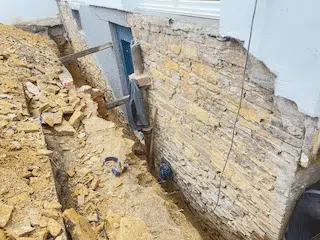

▥
Altbau
Altbauabdichtung
Altbauten besitzen oft besonderen Charakter. Im Laufe der Jahre können jedoch Risse, undichte Stellen und Feuchtigkeit in den Mauern entstehen.
Horizontalsperren, Sperrputzsysteme oder Sanierputzsysteme können helfen, Feuchtigkeit zu reduzieren und die Bausubstanz zu schützen.